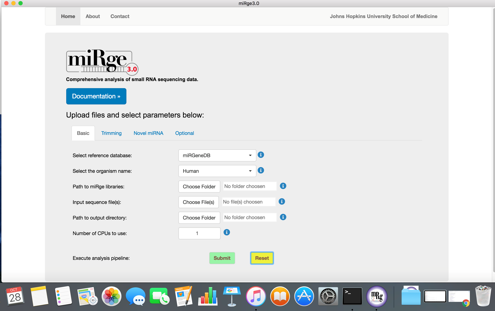

User guide¶
Parameters¶
To view command-line parameters type miRge3.0 -h:
usage: miRge3.0 [options]
miRge3.0 (Comprehensive analysis of small RNA sequencing Data)
optional arguments:
-h, --help show this help message and exit
--version show program's version number and exit
Options:
-s, --samples list of one or more samples separated by comma or a file with list of samples separated by new line (accepts *.fastq, *.fastq.gz)
-db, --mir-DB the reference database of miRNA. Options: miRBase and miRGeneDB (Default: miRBase)
-lib, --libraries-path the path to miRge libraries
-on, --organism-name the organism name can be human, mouse, fruitfly, nematode, rat or zebrafish
-ex, --crThreshold the threshold of the proportion of canonical reads for the miRNAs to retain. Range for ex (0 - 0.5), (Default: 0.1)
-phr, --phred64 phred64 format (Default: 33)
-spk, --spikeIn switch to annotate spike-ins if spike-in bowtie index files are located at the path of bowtie's index files (Default: off)
-ie, --isoform-entropy switch to calculate isomir entropy (default: off)
-cpu, --threads the number of processors to use for trimming, qc, and alignment (Default: 1)
-ai, --AtoI switch to calculate A to I editing (Default: off)
-tcf --tcf-out switch to write trimmed and collapsed fasta file (Default: off)
-gff --gff-out switch to output isomiR results in gff format (Default: off)
-bam --bam-out switch to output results in bam format (Default: off)
-trf --tRNA-frag switch to analyze tRNA fragment and halves (Default: off)
-o --outDir the directory of the outputs (Default: current directory)
-dex --diffex perform differential expression with DESeq2 (Default: off)
-mdt --metadata the path to metadata file (Default: off, require '.csv' file format if -dex is opted)
-cms --chunkmbs chunk memory in megabytes per thread to use during bowtie alignment (Default: 256)
-shh --quiet enable quiet/silent mode, only show warnings and errors (Default: off)
Data pre-processing:
-a, --adapter Sequence of a 3' adapter. The adapter and subsequent bases are trimmed
-g, --front Sequence of a 5' adapter. The adapter and any preceding bases are trimmed
-u, --cut Remove bases from each read. If LENGTH is positive, remove bases from the beginning. If LENGTH is negative, remove bases from the end
-nxt, --nextseq-trim NextSeq-specific quality trimming (each read). Trims also dark cycles appearing as high-quality G bases
-q, --quality-cutoff Trim low-quality bases from 5' and/or 3' ends of each read before adapter removal. If one value is given, only the 3' end is trimmed
If two comma-separated cutoffs are given, the 5' end is trimmed with the first cutoff, the 3' end with the second
-l, --length Shorten reads to LENGTH. Positive values remove bases at the end while negative ones remove bases at the beginning. This and the following
modifications are applied after adapter trimming
-NX, --trim-n Trim N's on ends of reads
-m, --minimum-length Discard reads shorter than LEN. (Default: 16)
-umi, --uniq-mol-ids Trim nucleotides of specific length at 5’ and 3’ ends of the read, after adapter trimming. eg: 4,4 or 0,4. (Use -udd to remove PCR duplicates)
-udd, --umiDedup Specifies argument to removes PCR duplicates (Default: False); if TRUE it will remove UMI and remove PCR duplicates otherwise it only remove UMI and keep the raw counts (Require -umi option)
-qumi, --qiagenumi Removes PCR duplicates of reads obtained from Qiagen platform (Default: Illumina; "-umi x,y " Required)
miRNA Error Correction:
microRNA correction method for single base substitutions due to sequencing errors (Note: Refines reads at the expense of time)
-mEC, --miREC Enable miRNA error correction (miREC)
-kh, --threshold the value for frequency threshold τ (Default kh = 5)
-ks, --kmer-start kmer range start value (k_1, default 15)
-ke, --kmer-end kmer range end value (k_end, default 20)
Predicting novel miRNAs:
The predictive model for novel miRNA detection is trained on human and mouse!
-nmir, --novel-miRNA include prediction of novel miRNAs
-minl, --minLength the minimum length of the retained reads for novel miRNA detection (default: 16)
-maxl, --maxLength the maximum length of the retained reads for novel miRNA detection (default: 25)
-c, --minReadCounts the minimum read counts supporting novel miRNA detection (default: 2)
-mloc, --maxMappingLoci the maximum number of mapping loci for the retained reads for novel miRNA detection (default: 3)
-sl, --seedLength the seed length when invoking Bowtie for novel miRNA detection (default: 25)
-olc, --overlapLenCutoff the length of overlapped seqence when joining reads into longer sequences based on the coordinate
on the genome for novel miRNA detection (default: 14)
-clc, --clusterLength the maximum length of the clustered sequences for novel miRNA detection (default: 30)
Optional PATH arguments:
-pbwt, --bowtie-path the path to system's directory containing bowtie binary
-psam, --samtools-path the path to system's directory containing samtools binary
-prf, --RNAfold-path the path to system's directory containing RNAfold binary
miRge3.0 libraries¶
miRge3.0 pipeline aligns the raw reads against a set of small-RNA annotation libraries. The libraries specific to the organism of interest can be obtained from SourceForge. Downloading the libraries on terminal:
Command-line Interface (CLI)¶
We recommend to create a directory miRge3_Lib and download using wget as shown below,
mkdir miRge3_Lib
cd miRge3_Lib
wget -O human.tar.gz "https://sourceforge.net/projects/mirge3/files/miRge3_Lib/human.tar.gz/download"
wget -O mouse.tar.gz "https://sourceforge.net/projects/mirge3/files/miRge3_Lib/mouse.tar.gz/download"
wget -O rat.tar.gz "https://sourceforge.net/projects/mirge3/files/miRge3_Lib/rat.tar.gz/download"
wget -O nematode.tar.gz "https://sourceforge.net/projects/mirge3/files/miRge3_Lib/nematode.tar.gz/download"
wget -O fruitfly.tar.gz "https://sourceforge.net/projects/mirge3/files/miRge3_Lib/fruitfly.tar.gz/download"
wget -O zebrafish.tar.gz "https://sourceforge.net/projects/mirge3/files/miRge3_Lib/zebrafish.tar.gz/download"
wget -O hamster.tar.gz "https://sourceforge.net/projects/mirge3/files/miRge3_Lib/hamster.tar.gz/download"
Users can download only what is necessary. Unzip the files once downloaded by the following command:
tar -xzf human.tar.gz
Replace human with the organism of interest. If you want to extract all the files at once, you could use tar -xzf *.tar.gz instead.
Direct download¶
If you are having trouble downloading files through SourceForge, please use the direct link to download the library by clicking on links: Human, Mouse, Rat, Zebrafish, Nematode, Fruitfly, Golden Hamster and md5sum.
Graphical User Interface (GUI)¶
We recommend to create a folder miRge3_Lib and download the libraries directly from SourceForge. Once downloaded, extract/unzip the compressed files.
Building new libraries¶
If you are interested in creating specific library for an organism that is not part of this set then please refer to miRge3_build.
CLI - Example usage¶
Example command usage:
miRge3.0 -s SRR772403.fastq,SRR772404.fastq,SRR772405.fastq,SRR772406.fastq -lib miRge3_Lib -on human -db mirgenedb -o output_dir -gff -nmir -trf -ai -cpu 12 -a illumina
Output command line:
bowtie version: 1.2.3
Samtools version: 1.7
RNAfold version: 2.4.14
Collecting and validating input files...
miRge3.0 will process 4 out of 4 input file(s).
Cutadapt finished for file SRR772403 in 2.5358 second(s)
Collapsing finished for file SRR772403 in 0.0126 second(s)
Cutadapt finished for file SRR772404 in 7.3542 second(s)
Collapsing finished for file SRR772404 in 0.2786 second(s)
Cutadapt finished for file SRR772405 in 11.0667 second(s)
Collapsing finished for file SRR772405 in 0.8585 second(s)
Cutadapt finished for file SRR772406 in 3.5771 second(s)
Collapsing finished for file SRR772406 in 0.8677 second(s)
Matrix creation finished in 0.3838 second(s)
Data pre-processing completed in 27.2443 second(s)
Alignment in progress ...
Alignment completed in 15.8305 second(s)
Summarizing and tabulating results...
The number of A-to-I editing sites for is less than 10 so that no heatmap is drawn.
Summary completed in 71.4691 second(s)
Predicting novel miRNAs
Performing prediction of novel miRNAs...
Start to predict
Prediction of novel miRNAs Completed (104.83 sec)
The analysis completed in 222.2487 second(s)
Test¶
The test case illustrates the usage of miRge3.0 with a sample dataset, mapping to human reference libraries.
First download human miRge libraries as shown below:
mkdir miRge3_Lib
cd miRge3_Lib
wget -O human.tar.gz "https://sourceforge.net/projects/mirge3/files/miRge3_Lib/human.tar.gz/download"
tar -xzf human.tar.gz
cd ..
Download the sample file from Source Forge, SRR772403
You can download to your working directory as shown below:
wget -O SRR772403.fastq.gz "https://sourceforge.net/projects/mirge3/files/test/SRR772403.fastq.gz/download"
Run basic miRge3.0 command to annotate and report isomiRs
miRge3.0 -s SRR772403.fastq.gz -lib /mnt/d/Halushka_lab/Arun/miRge3_Lib -a illumina -on human -db mirbase -o output_dir -gff -cpu 8
bowtie version: 1.3.0
cutadapt version: 3.1
Samtools version: 1.11
Collecting and validating input files...
miRge3.0 will process 1 out of 1 input file(s).
Cutadapt finished for file SRR772403 in 3.4343 second(s)
Collapsing finished for file SRR772403 in 0.0216 second(s)
Matrix creation finished in 0.0263 second(s)
Data pre-processing completed in 3.5111 second(s)
Alignment in progress ...
Alignment completed in 8.1488 second(s)
Summarizing and tabulating results...
Summary completed in 2.27 second(s)
The analysis completed in 15.2276 second(s)
Output folder, sample output can be accessed here
miRge creates a subfolder inside the folder "output_dir" and all the files will be stored there. The test output can be accessed at the following link:
https://sourceforge.net/projects/mirge3/files/test/output_dir/miRge.2021-06-25_15-16-58/
Trimming both 5' and 3' adapters - Linked adapters¶
If the data contains adapters at both 5' and 3' ends of the reads and both the adapters need to be removed then you should perform linked adapter trimming. This is part of Cutadapt and more about linked adapters can be found here.
Example:
miRge3.0 -s DRR013811.fastq -lib /mnt/d/Halushka_lab/Arun/GTF_Repeats_miRge2to3/miRge3_Lib/revised_hsa -on human -db mirbase -o output_dir -g "TTAGGC...TGGAATTCTCGGGTGCCAAGGAACTCCAGT"
Description of adapter: "TTAGGC...TGGAATTCTCGGGTGCCAAGGAACTCCAGT", where TTAGGC is the 5' adapter and TGGAATTCTCGGGTGCCAAGGAACTCCAGT is the 3' adapter sequence.
Note: Complete adapter sequence must be provided (mandatory) i.e., simply specifying illumina will not be decoded to its actual adapter sequence.
This will NOT WORK: -g "TTAGGC...illumina"
This will WORK: -g "TTAGGC...TGGAATTCTCGGGTGCCAAGGAACTCCAGT"
Running samples with UMI¶
Qiagen - based UMI¶
Testing sample data run on UMI obtained from Qiagen platform. Important parameters are (-umi, --qiagenumi and -udd)
miRge3.0 -s SRR13077007.fastq -db miRBase -lib miRge3_Lib -on human -a AACTGTAGGCACCATCAAT --qiagenumi -umi 0,12 -o output_dir -cpu 10 -udd
Please note: As of July, 2021, the standard internal 3' adapter was AACTGTAGGCACCATCAAT ligated to 12 nucleotide UMI sequence followed by external 3' adapter sequence. If you have different internal adapter other than AACTGTAGGCACCATCAAT, then please provide that.
Example of reads, UMI and adapters for hsa-let-7a (sequence left to right in the order mentioned below with-in angular brackets):
<hsa-let-7a-5p: TGAGGTAGTAGGTTGTATAGTT><Internal 3' adapter:AACTGTAGGCACCATCAAT><12 nt UMI><external 3' adapter AGATCGGAAGAGCACACGTCT>
TGAGGTAGTAGGTTGTATAGTTAACTGTAGGCACCATCAATGTTAGACCTGCAAGATCGGAAGAGCACACGTCTG
TGAGGTAGTAGGTTGTATAGTTAACTGTAGGCACCATCAATCAATGACGATTTAGATCGGAAGAGCACACGTCTG
TGAGGTAGTAGGTTGTATAGTTAACTGTAGGCACCATCAATAAACAAAGATCCAGATCGGAAGAGCACACGTCTG
TGAGGTAGTAGGTTGTATAGTTAACTGTAGGCACCATCAATCGCATCGCCGACAGATCGGAAGAGCACACGTCTG
TGAGGTAGTAGGTTGTATAGTTAACTGTAGGCACCATCAATTTTGCCATTACTAGATCGGAAGAGCACACGTCTG
Illumina - based UMI/4N method¶
Testing sample data run on UMI/4N obtained from Illumina or similar platform. Important parameters are (-umi and -udd)
miRge3.0 -s SRR6379839.fastq -db miRBase -lib miRge3_Lib -on human -a illumina -umi 4,4 -o output_dir -cpu 10 -udd
<04 nt UMI><hsa-let-7a-5p: TGAGGTAGTAGGTTGTATAGTT><04 nt UMI><3' adapter:TGGAATTCTCGGGTGCCAAGGAACTCCAGTCACCGGAATATCTCG>
TACATGAGGTAGTAGGTTGTATAGTTCCTCTGGAATTCTCGGGTGCCAAGGAACTCCAGTCACCGGAATATCTCG
TACCTGAGGTAGTAGGTTGTATAGTTACTATGGAATTCTCGGGTGCCAAGGAACTCCAGTCACCGGAATATCTCG
CAGGTGAGGTAGTAGGTTGTATAGTTGGTATGGAATTCTCGGGTGCCAAGGAACTCCAGTCACCGGAATATCTCG
AGAATGAGGTAGTAGGTTGTATAGTTACTATGGAATTCTCGGGTGACAAGGAACTCCAGTCACCGGAATATCTCG
AGGTTGAGGTAGTAGGTTGTATAGTTACTATGGAATTCTCGGGTGCCAAGGAACTCCAGTCACCGGAATATCTCG
Performing differential expression analysis¶
Download example datasets from NCBI SRA (Note: Tutorial on how to download SRA files is below).
Prepare metadata information in CSV format as shown below. For this tutorial, download the file from here.
id,group
SRR8497647,Control
SRR8497648,Control
SRR8497649,Control
SRR8497650,Control
SRR8497651,treated
SRR8497652,treated
SRR8497653,treated
SRR8497654,treated
Execute the following command:
miRge3.0 -s SRR8497647.fastq,SRR8497648.fastq,SRR8497649.fastq,SRR8497650.fastq,SRR8497651.fastq,SRR8497652.fastq,SRR8497653.fastq,SRR8497654.fastq -lib miRge3_Lib -on human -db miRGeneDB -o differential_Exp -a TGGAATTCTCGG -cpu 12 -dex -mdt DESmetadata.csv
Tutorial on how to download SRA files:
This turorial is only brief introduction and doesn't cover all the details of downloading NCBI SRA files. You could find YouTube tutorials on how to download SRA files.
Download and install NCBI SRA toolkit: You could refer to NCBI SRA Handbook or GitHub
Download command: One could use
fasterq-dump -t temp -e 10 SRR8497647or simplyfastq-dump SRR8497647. The only difference being that the fasterq-dump is faster. Similarly, download all other Runs (i.e., SRR8497648, SRR8497649 etc.)
miRge3.0 GUI¶
The application is cross platform, the image below is a screenshot of the software from MacOS

The software is easy to use with default parameters. The parameters are tabulated into four groups such as basic, trimming parameters, novel miRNA prediction and other optional parameters.
Screenshot with basic parameters 
Screenshot with trimming parameters

Screenshot with novel miRNA predictions

Screenshot with other optional parameters